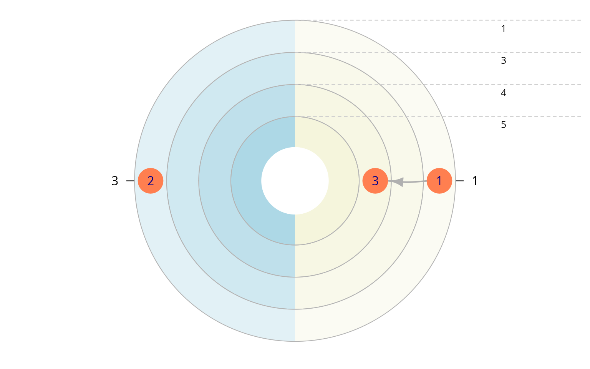

Working with Allbus 2010 ego-centered network data using egor
Till Krenz
2025-10-31
Source:vignettes/egor_allbus.Rmd
egor_allbus.RmdNote: The data used in this vignette is simulated based on the the original Allbus 2010 SPSS data by GESIS. The dataset simulates 100 respondents and does not resemble any actual Allbus respondents. Each variable is randomly generated based on the range of the original variables, co-variations of variables are disregarded. The data’s purpose is purely to demonstrate how to technically work with the Allbus data using egor and R - no analytical assumptions should be made based on this data! The code in this vignette works with the original Allbus 2010 data, that can be acquired here.
The Allbus 2010: ego-centered network data
The Allbus 2010 splits the respondents into two groups. Both groups were presented different name generators.
- Allbus name generator - the generated alters are called “Freunde” (friends in German) in the data (max. 3 persons, “spent time with in private, not living in same household”)
- GSS name generator - these alters are called “Kontakte” (contacts in German) in the dataset (max. 5 persons, “discussed important matters”)
For more information please consult the Allbus documentation. ## Load packages and data
In addition to egor, this vignette uses the haven package, to import the SPSS file of the Allbus 2010 and the purrr package, that provides enhanced functional programming functions. The purrr functions used in this vignette are map*() functions, which are similar in their functionality to base R’s lapply().
When using haven to import the original Allbus data, that would look like this.
raw_data <- read_sav("ZA4610_A10.SAV")For the purpose of the vignette we are loading a simulated data instead.
data("allbus_2010_simulated")
raw_data <- allbus_2010_simulatedThe Allbus variable names are quite technical ranging from V1 to V981. Fortunately the haven data import preserves the SPSS variable labels, that describe each variable in more detail. We are going to convert these labels into a format, that allows us to use them as variable names.
The code below extracts all variable labels and eliminates all non-characters from the labels and substitutes spaces with underscores.
var_labels <- map_chr(raw_data, ~attr(., "label"))
var_labels <- gsub("[,\\.:;><?+()-]", " ", var_labels)
var_labels <- gsub("\\s+", "_", trimws(var_labels))The variable labels for the ego-centered network module need some special treatment, so that egor can give useful names to the alter variables. We are deleting the first part from those labels, that is shared by all variables in each split.
var_labels <- gsub("FREUND_IN_._", "", var_labels)
var_labels <- gsub("^KONTAKT_._", "", var_labels)Now we can use the cleaned up variable labels as names for our data.
names(raw_data) <- make.unique(var_labels, sep = "")Convert the data to egor objects
We are going to create two separate ego objects for each split. Starting with the “Freunde” split.
First we filter out only those respondents from split 1.
Now we use the onefile_to_egor() function to convert the data to an egor object. This function needs a few arguments in order for it to be able to locate the alter data and alter-alter tie data in the dataset.
e_freunde <- onefile_to_egor(
egos = split_freunde,
ID.vars = list(ego = "IDENTIFIKATIONSNUMMER_DES_BEFRAGTEN"),
netsize = split_freunde$ANZ_GENANNTER_NETZWERKPERS_SPLIT_1,
attr.start.col = "GESCHLECHT",
attr.end.col = "SPANNUNGEN_KONFLIKTE2",
aa.first.var = "KENNEN_SICH_A_B",
max.alters = 3)
#> Sorting data by egoID:
#> Done.
#> Transforming alters data to long format:
#> Done.
#> Transforming wide dyad data to edgelist:
#> Done.
#> Note: Make sure to filter out alter-alter ties with invalid weight values.
#> Filtering out empty alter entries using provided network size values:
#> Done.The onefile_to_egor() function prints some messages during the conversion, that are supposed to help us to identify problems in case something something goes wrong.
We also see a NOTE, that tells us that we need to filter out invalid alter-alter ties. In this case those are ties with a weight of 2, since Allbus codes not existing ties with 2 here.
attr(raw_data$KENNEN_SICH_A_B, "labels")
#> TRIFFT NICHT ZU KENNEN SICH GUT KENNEN SICH NICHT KEINE ANGABE
#> 0 1 2 9“KENNEN SICH NICHT” means “don’t know each other” in german.
We can filter the alter-alter ties using the activate() and filter() functions.
Next we repeat the same steps for split 2. Here we need to filter out the weight value 3 from the alter-alter ties and of adjust some arguments according to the position of the data in the dataset and the maximum amount of alters that the respondents were allowed to nominate.
split_kontakte <-
raw_data %>%
filter(FRAGEBOGENSPLIT_F020 == 2)
e_kontakte <- onefile_to_egor(
egos = split_kontakte,
ID.vars = list(ego = "IDENTIFIKATIONSNUMMER_DES_BEFRAGTEN"),
netsize = split_kontakte$ANZ_GENANNTER_NETZWERKPERS_SPLIT_2,
attr.start.col = "GESCHLECHT3",
attr.end.col = "SPANNUNGEN_KONFLIKTE7",
aa.first.var = "KENNEN_SICH_KONTAKT_A_B",
max.alters = 5)
#> Sorting data by egoID:
#> Done.
#> Transforming alters data to long format:
#> Done.
#> Transforming wide dyad data to edgelist:
#> Done.
#> Note: Make sure to filter out alter-alter ties with invalid weight values.
#> Filtering out empty alter entries using provided network size values:
#> Done.
e_kontakte <-
e_kontakte %>%
activate(aatie) %>%
filter(weight != 3) %>%
activate(ego)Visualize and analyze
Now we can visualize and analyze the Allbus data. A few
demonstrations follow. For an overview of available options, please see
the main vignette of egor “Using egor to analyse
ego-centered network data”.
plot(e_freunde, ego_no = 4, x_dim = 2, y_dim = 1)
plot(e_kontakte, ego_no = 4, x_dim = 2, y_dim = 1)
e_freunde <-
e_freunde%>%
activate(alter) %>%
mutate(WO_GEBOREN = droplevels(as_factor(WO_GEBOREN)),
KONTAKTE = droplevels(as_factor(KONTAKTE)))
plot_egograms(e_freunde,
ego_no = 4,
x_dim = 1,
y_dim = 1, venn_var = "KONTAKTE",
pie_var = "WO_GEBOREN")
e_kontakte <-
e_kontakte %>%
activate(alter) %>%
mutate(WO_GEBOREN = droplevels(as_factor(WO_GEBOREN)),
KONTAKTE = droplevels(as_factor(KONTAKTE)))
plot_egograms(e_kontakte,
ego_no = 4,
x_dim = 1,
y_dim = 1,
venn_var = "KONTAKTE" ,
pie_var = "WO_GEBOREN")